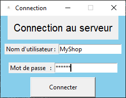
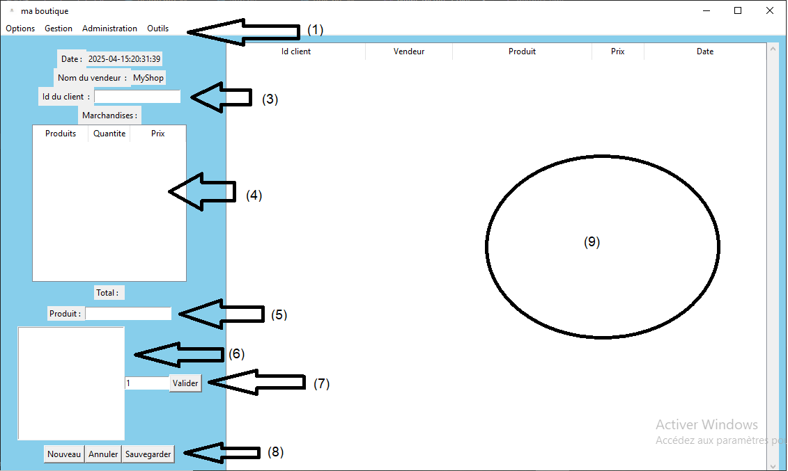

Guide d'utilisation
Interface Utilisateur
L'interface graphique est super intuitif
Tout commence par la page de connection où vous devez remplir le nom d'utilisateur et le mot de passe.
Par defaut, il s'agit de :
-
Nom d'utilisateur : MyShop
-
Mot de passe : MyShop

Après vous etre bien identifier avec des identifiants valides vous serait alors diriger vers cette page 
Serveur (API)
Description Générale
Cette section est le point d'entrée pour la partie serveur de l'application. Il utilise le framework Flask pour fournir une API REST permettant de gérer les utilisateurs, les ressources, et les configurations. Le serveur interagit avec une base de données et utilise des cookies pour authentifier les utilisateurs.
Points de Terminaison de l'API
-
GET /api/v1/check_cookie- Vérifie si un utilisateur est connecté via les cookies.
- Réponse : Statut de la connexion.
-
POST /api/v1/login- Authentifie un utilisateur avec ses informations de connexion.
- Données attendues :
{"username":"nom d'utilisateur", {"password":"mot de passe"}. - Réponse : Résultat de l'authentification.
-
POST /api/v1/reset_passwd- Réinitialise le mot de passe d'un utilisateur.
- Données attendues :
{"username":"nom d'utilisateur", {"password":"mot de passe","password_confirmation":"mot de pass"}.
-
POST /api/v1/<ressource>/add- Ajoute une nouvelle entrée dans une ressource (ex. :
users,produits). - Données attendues : Objet JSON contenant les informations de la ressource.
- Ajoute une nouvelle entrée dans une ressource (ex. :
-
GET /api/v1/<ressource>/all- Liste tous les éléments d'une ressource.
- Réponse : Liste des éléments.
-
GET /api/v1/<ressource>/<id>- Récupère un élément spécifique d'une ressource.
- Paramètre attendu dans l'URL :
id.
-
POST /api/v1/<ressource>/<id>/change- Modifie un élément spécifique d'une ressource.
- Données attendues : Objet JSON contenant les nouvelles informations.
-
GET /api/v1/<ressource>/<id>/delete- Supprime un élément spécifique d'une ressource.
- Paramètre attendu dans l'URL :
id.
En ce qui concerne les objects attendu par le serveur pour les differentes ressources, nous vous recommandons d'utilisez le client myshop.client et utiliser les objets fournit dans myshop.my_objects ou si vous souhaitez l'utliser sur une architecture non prevu par les developpeurs l'ingenierie invesée est autorisée :) :) :)
Gestion des Ressources
Côte serveur, la ressource correspond à une strcuture de données pouvant etre exploiter par un client.
Les ressources qui sont pris en charge ou qui peuvet etre exploiter sont :
- produits` : Regroupe les produits qui existent
- categories : Regroupe les catagories de produits (chaque produit est attaché à uniquement une categorie)
- ventes : Regroupe les ventes
- arrivages : Regroupe les arrivages
- promotions : Regroupe les promotions sur les produits (reduction)
- clients : Regroupe les clients presents dans la base de donnée
- users : Regroupe les utilisateurs de l'application
- logs : Regroupe les logs (journal d'activité)
- session : Regroupe les sessions
- notes : Regroupe les notes qui peuvent servir pour passer une information aux autres utilisateurs
- settings : Qui correspond à la configuration du serveur
Mais à chaque ressources est attribuer des actions specifiques qui peuvent etre effectuer sur elle. Ainsi nous avous les actions :
- add: Qui correspond à une requete de type POST qui ajoute les données dans la table de la ressource
- get : Qui recupere par une requete GET le contenu d'une ressources en connaisant ou parfois pas l'identifiant de l'object dans la table
- change : Qui modifie par un requete de type POST le contenu d'un ressource
- delete : Qui supprime par une requete GET le contenu d'un ressources en specifiant l'identifiant de l'idantifiant de l'objet dans la ressource
Pour assurer la securité dans la gestion de resssource, une separation de droit a ete fait c'est-à-dire que tous les utilisateurs n'ont pas les mêmes droits ou permissions. Nous disposons de :
-
admin : Qui correspond à l'administrateur qui a tous les droits sur toutes les ressources :)
-
vendeur : Qui ne s'occupe que des actions qui sont lier à la vente. Dont les permissions sont de la maniere suivante:
{ 'ventes': ['add'], 'stocks': ['all', 'get'], 'produits': ['all', 'get'], 'sessions': ['change', 'delete'], 'categories': ['all', 'get'], 'clients': ['add', 'get', 'all'], 'promotions': ['all', 'get'] } - moniteur : Qui ne peut que observer ce qui se passe sur la serveur. Il ne peut qu'envoyait des requetes avec l'action all vers les ressources:
{ "logs": ['all'], 'stocks': ['all'], 'produits': ['all'], 'users': ['all'], 'promotions': ['all'], 'notes': ['all'] }